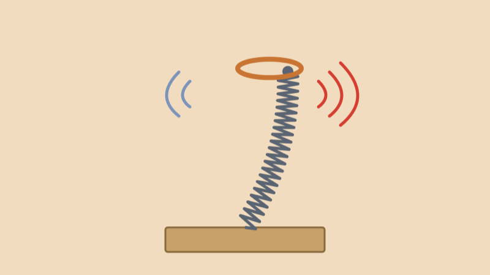
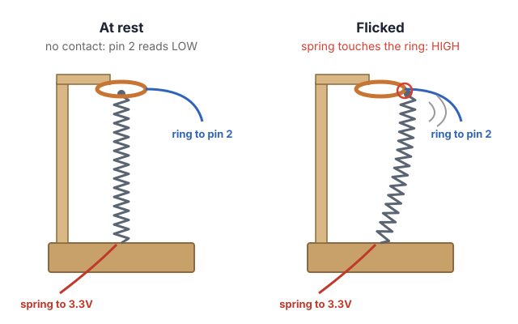
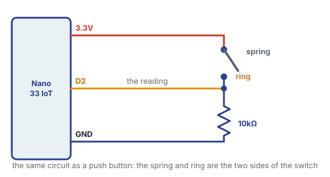

A doorstop spring is the springy coil you find screwed into a wall or baseboard so a door doesn’t hit it. Flick it and it wobbles back and forth with a “boing” sound. Today we turn one into a switch: we put a metal ring around its tip, and every time the spring wobbles into the ring, it closes a circuit, just like pressing a button.
A button is pressed once. A flicked spring touches the ring many times in a row as it settles, and a harder flick makes more touches. That makes it a great switch for playful interfaces: an instrument, a game controller, or anything that should react to a flick, a knock or a breeze.

The spring and the ring are the two sides of a switch:
Doorstop springs are made of steel, which conducts electricity, so the whole spring works as a wire.
From the hardware store (about $1–2 each):
From your electronics kit:
Provided by the lab:
The size of the gap changes how the switch feels: a small gap makes it touch even with a gentle flick, a big gap needs a hard flick.

This is the same circuit as a push button, with the spring and the ring as the two sides of the switch:
Tip: tape the alligator clips’ wires down to the base, so they don’t pull on the spring or the ring.
Upload this sketch and open the Serial Monitor (9600 baud). Every time the spring touches the ring, the count goes up, and the built-in LED blinks.
// Bounce Counter: count every time the spring touches the ring.
int springPin = 2;
int lastState = LOW; // was the spring touching the ring last time?
int contacts = 0; // how many times it has touched so far
void setup() {
pinMode(springPin, INPUT);
pinMode(LED_BUILTIN, OUTPUT);
Serial.begin(9600);
}
void loop() {
int state = digitalRead(springPin);
// the built-in LED is on while the spring touches the ring
digitalWrite(LED_BUILTIN, state);
// count it only when the spring goes from not touching to touching
if (state == HIGH && lastState == LOW) {
contacts = contacts + 1;
Serial.println(contacts);
}
lastState = state;
}Flick the spring once and watch the numbers: one flick counts many times, maybe 5, maybe 30. The spring wobbles in and out of the ring as it settles, and the Arduino checks the pin thousands of times a second, so it sees every touch.
This is called bouncing, and every switch does it a little, even a push button (its metal contacts bounce for a few milliseconds). Usually we have to filter it out. With a spring, the bounces are the fun part.
Notice that loop() has no
delay(): the spring touches the ring for
only a few milliseconds at a time, and a delay()
would make the Arduino miss them.
Now every touch plays a very short beep, so one flick sounds like a buzzy, rhythmic “brrrr” that slows down as the spring settles.
Connect your speaker to pin 8:
// Spring Boing: play a short click of sound every time the spring touches the ring.
int springPin = 2;
int speakerPin = 8;
int lastState = LOW;
void setup() {
pinMode(springPin, INPUT);
pinMode(speakerPin, OUTPUT);
}
void loop() {
int state = digitalRead(springPin);
if (state == HIGH && lastState == LOW) {
tone(speakerPin, 880, 15); // a very short beep: 880 Hz for 15 milliseconds
}
lastState = state;
}Try it:
880 to a different pitch, or make it
random with random(200, 2000).15.What if you want the spring to work like a button: one flick, one action? We count the bounces, and when the spring has been quiet for 300 milliseconds, we decide the flick is over. Then we use the number of bounces as the strength of the flick: a harder flick plays a higher note.
// Flick Strength: count the bounces in one flick, then play a note.
// A harder flick makes the spring bounce more, so it plays a higher note.
int springPin = 2;
int speakerPin = 8;
int lastState = LOW;
int bounces = 0; // bounces in the current flick
unsigned long lastBounce = 0; // when the last bounce happened (in milliseconds)
void setup() {
pinMode(springPin, INPUT);
pinMode(speakerPin, OUTPUT);
Serial.begin(9600);
}
void loop() {
int state = digitalRead(springPin);
if (state == HIGH && lastState == LOW) {
bounces = bounces + 1;
lastBounce = millis(); // remember when it happened
}
lastState = state;
// no bounce for 300 milliseconds: the spring has settled, so the flick is over
if (bounces > 0 && millis() - lastBounce > 300) {
Serial.print("Flick! Bounces: ");
Serial.println(bounces);
int pitch = map(bounces, 1, 30, 200, 2000);
pitch = constrain(pitch, 200, 2000);
tone(speakerPin, pitch, 300);
bounces = 0; // get ready for the next flick
}
}Two new things:
millis() gives the number of
milliseconds since the Arduino started. We save it in
lastBounce at every bounce. Then
millis() - lastBounce tells us how long it’s been
since the last one, without using
delay(), so we don’t miss any bounces while
waiting.unsigned long is a kind of variable for very
big, never-negative numbers. millis() gets big fast
(there are 86,400,000 milliseconds in a day), so we store it in
an unsigned long instead of an
int.map() and constrain() turn the
number of bounces (1 to 30) into a pitch (200 to 2000 Hz). Open
the Serial Monitor to see how many bounces your flicks make, and
change the 30 to fit your spring.
Try it: flick it softly, then hard. Can you play a melody by controlling how hard you flick?
tone(); the kit’s active buzzer only
beeps at one pitch.